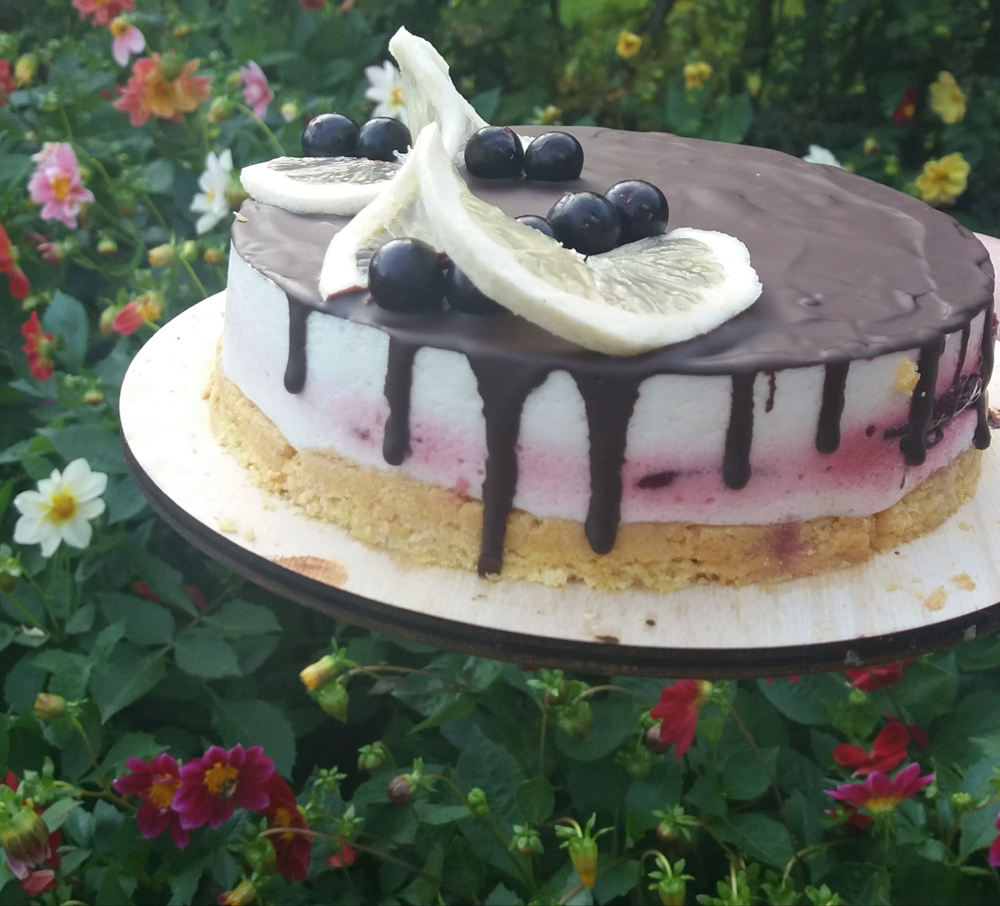
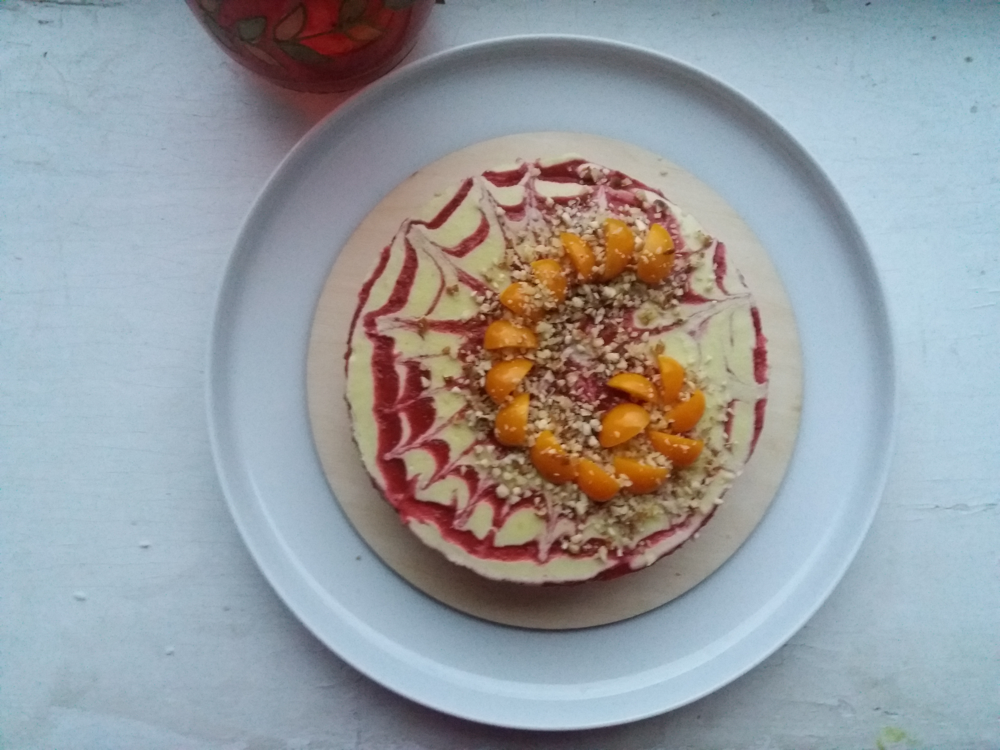
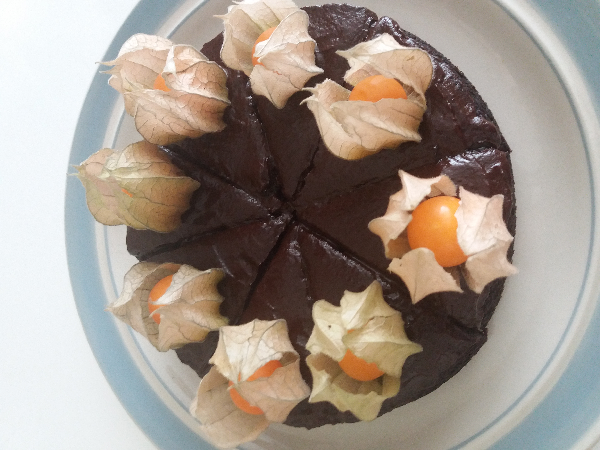

The essential desserts
Without animal-derived products like butter, eggs, and dairy, vegan desserts are often lower in saturated fat and cholesterol. Vegan desserts also tend to incorporate whole foods like fruits, veggies, whole grains, nuts, and seeds, which offer beneficial dietary fiber and other essential nutrients.


Nutrient-richs vegan bakes
Vegan recipes rarely call for many processed ingredients or saturated fats. Instead, the nuts and seeds used as dairy substitutes are a great source of unsaturated fats, which help lower blood pressure and cholesterol.